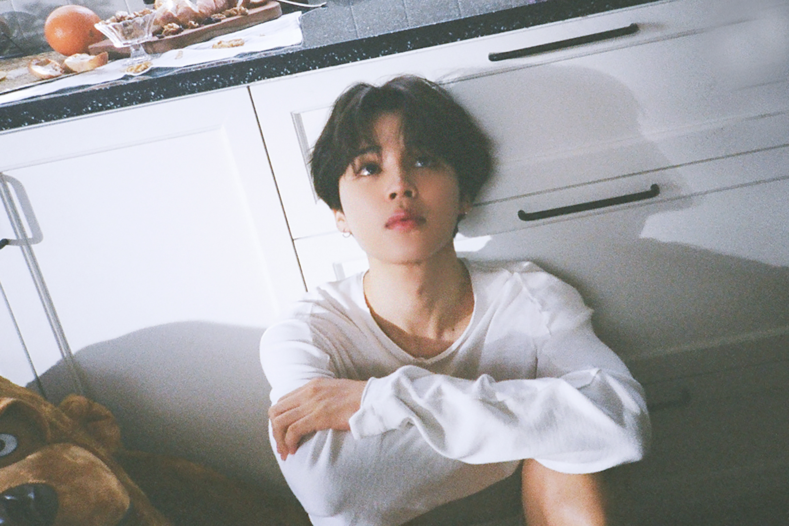

Park Jimin
Jimin (박지민 / Park Ji min) Es uno de los primeros vocalistas en ser revelados en BTS junto con Jin, jimin es el cantante que destaca por sus notas altas y armonía entre las partes de otros miembros. También es parte de la Dance Line, donde resalta por sus movimientos rápidos y baile contemporáneo.
Jimin debuta junto a las demás integrantes de BTS el 13 de Junio de 2013 con la canción ‘‘No More Dream’’ en el show musical M!Countdown. El grupo a pesar de su poco tiempo de haber debutado ganaron en múltiples premiaciones en la categoría Mejor Artista Nuevo del año, como Melon Music Awards, Golden Disk Awards, Seoul Music Awards, Gaon Chart K-Pop Awards, POPASIA Awards, SOMPI Awards, entre otras. Jimin debutó cuando tenía 17 años a nivel internacional y 19 años en Corea del Sur..
Como artista ha recibido tres premios nacionales: en 2018 recibió la Orden al Mérito Cultural en los Korean Popular Culture & Arts Awards, entregada por el Presidente de Corea del Sur. En 2019 recibió una placa de apreciación por su baile con abanicos en los MMA 2018 , llamado “bunchaechum”, por promover de manera significativa y con impacto la cultura coreana, y el premio Van Fleet en 2020 por mejorar las relaciones entre Estados Unidos y Corea del Sur.